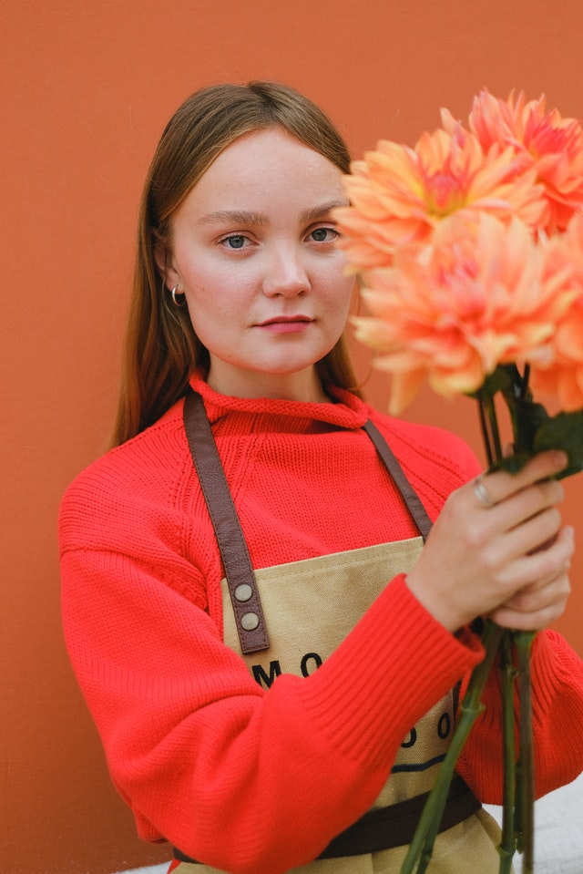

Audience Description
This site is designed for people who are interested in starting a business in the city of Shaver Lake or who are interested in having more information on government support that helps them improve the economy in the community.
Persona 1
-
Name: Christian Steward
-
Age: 33 years
-
Occupation: Business Owner
He is a bussiness owner on the town of Shaver Lake, he own a place that sells all kinds of goods for locals or turist such as snacks for campers, food or groseries.
Persona 2
-
Name: Rosie Steel
-
Age: 32 years
-
Occupation: Florist
Young girl who has an infinite love for flowers. she has always lived in Shaver Lake and loves the diversity of options she has here to design her arrangements. She loves to share these beautiful arrangements with people who visit the town, and is convinced that nothing shows more love than a flower arrangement.
Scenarios
-
What are the best paid bussiness in town?
-
What are the most practiced activities?
-
Which is the best economical season?
-
What are the public budget supported activities?
-
What are the best bussinesses according to income from the previous
year?